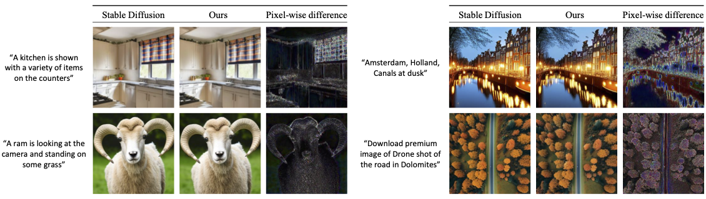
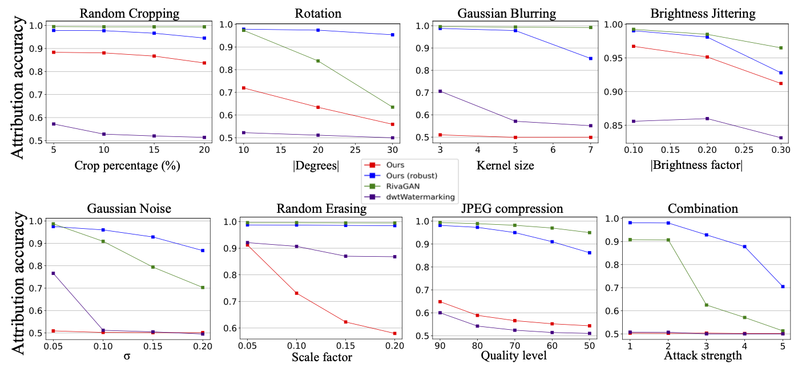

WOUAF adds up to 128-bit fingerprints into any diffusion model (including
Text-to-Image models) without loss in image quality.
Abstract
The rapid advancement of generative models, facilitating the creation of hyper-realistic images from
textual descriptions, has concurrently escalated critical societal concerns such as misinformation.
Traditional fake detection mechanisms, although providing some mitigation, fall short in attributing
responsibility for the malicious use of synthetic images. This paper introduces a novel approach to model
fingerprinting that assigns responsibility for the generated images, thereby serving as a potential
countermeasure to model misuse. Our method modifies generative models based on each user's unique digital
fingerprint, imprinting a unique identifier onto the resultant content that can be traced back to the
user. This approach, incorporating fine-tuning into Text-to-Image (T2I) tasks using the Stable Diffusion
Model, demonstrates near-perfect attribution accuracy with a minimal impact on output quality. We
rigorously scrutinize our method's secrecy under two distinct scenarios: one where a malicious user
attempts to detect the fingerprint, and another where a user possesses a comprehensive understanding of
our method. We also evaluate the robustness of our approach against various image post-processing
manipulations typically executed by end-users. Through extensive evaluation of the Stable Diffusion
models, our method presents a promising and novel avenue for accountable model distribution and
responsible use. Our code is available in the supplementary material.


More results of WOUAF are shown in the paper and the code would be available soon.
Related Links
There's a lot of excellent parallel work focusing on attributing diffusion models.
@article{kim2023wouaf,
author = {Kim, Changhoon and Min, Kyle and Patel, Maitreya and Cheng, Sheng and Yang, Yezhou},
title = {WOUAF: Weight Modulation for User Attribution and Fingerprinting in Text-to-Image Diffusion Models},
year = {2023},
}